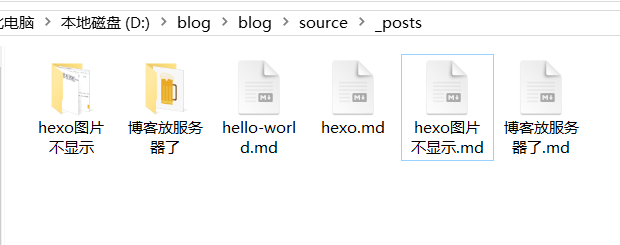
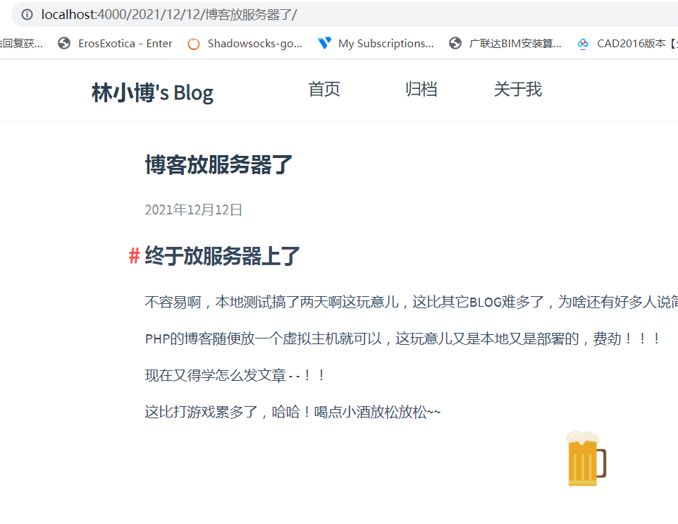
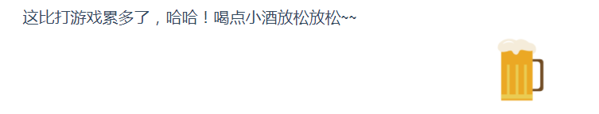

hexo图片不显示
2021年12月12日
图片不显示我是怎么做的
网上找了半天都没一个说对的，有搞好的得用插件什么的，大部分都是文案抄来抄去的，下面就是我自己瞎搞好了的。
把post_asset_folder: false改为: true 新建文章的时候就会自动生成一个跟文章名字一样的文件夹，
-
例如: 
这个改了插图的时候直接用 ./图片名称.png 网站上和本地都可以显示出来，但是用边写边预览的工具就不会显示图片就是下面这样子
<img src="./pj.png" style="zoom:33%;" />本地 hexo s后是可以显示的
部署到服务器也可以显示的
